A makeup routine deserves better than a bathroom counter crowded with toothpaste and someone else's toiletries. A dedicated vanity changes the whole experience, better lighting, actual storage, and a spot that feels like it was built for the routine instead of just tolerating it.
What makes a vanity genuinely gorgeous comes down to three things: lighting that actually works, storage that looks as good as it functions, and a style that fits the room instead of fighting it. Get those right and the rest is just personal taste.

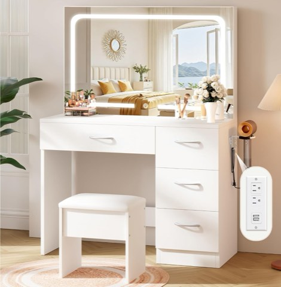
LIVELYGLOW 35.4 Inch White Vanity Desk Set with Full-Width LED Mirror and Stool
Shop on Amazon16 Makeup Vanity Ideas
1. Personalized to Actually Feel Like You
This is the idea that matters most in the long run. Trends come and go, but personal style is what actually sticks.
A vanity should feel like it belongs to the person using it, not like a copy of someone else's setup pulled straight from a feed.
Displaying favorite perfumes, adding a framed photo or small piece of art, and choosing colors that are genuinely loved rather than trending all build toward that. A vanity that makes its owner happy has already succeeded.
2. Built Around Natural Light
Natural light changes everything about how makeup actually looks once it leaves the house, which makes planning a vanity near a window worth real consideration.
Placing the vanity perpendicular to a window, rather than facing directly into or away from it, gives the most even, accurate light for application.
Sheer curtains soften harsh daylight, a mirror helps bounce available light further into the space, and soft LEDs pick up the slack for evening use.
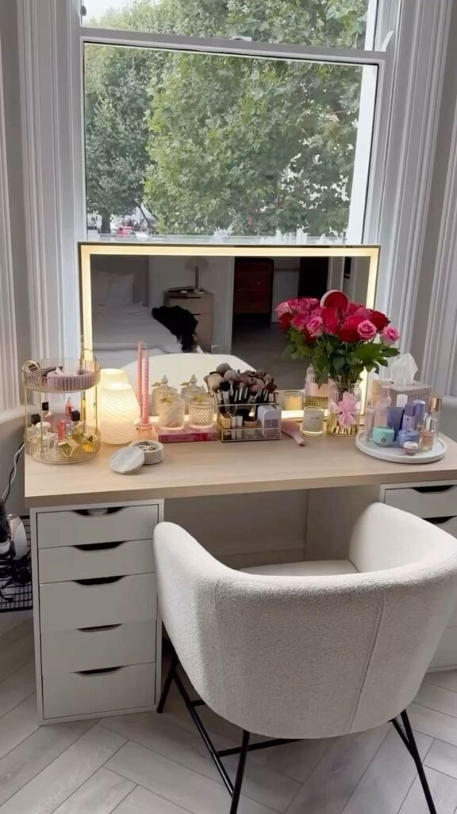
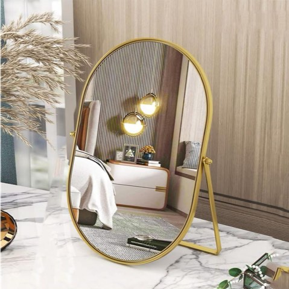
Oval Vanity Desk Table Mirror, Gold Metal Frame, 90 Degree Adjustable Stand
Shop on Amazon3. Custom-Designed for the Routine
A custom vanity feels special because it's built around actual habits rather than a generic routine someone else designed.
Drawer height tailored for palettes, mirror size and placement chosen deliberately, and lighting brightness dialed in specifically all make a real difference.
This option works best for anyone who already knows exactly what their routine needs. When a vanity fits that routine precisely, getting ready stops feeling like a chore.
4. Dual-Purpose Desk and Vanity
When space is genuinely tight, one surface doing double duty as both a desk and a vanity solves more problems than adding separate furniture ever would.
Drawer organizers keep makeup and work items from blending together, and a foldable mirror tucks away when the desk needs to be a desk again.
Neutral decor works for both functions, and a genuinely comfortable chair supports the longer stretches either task might require.
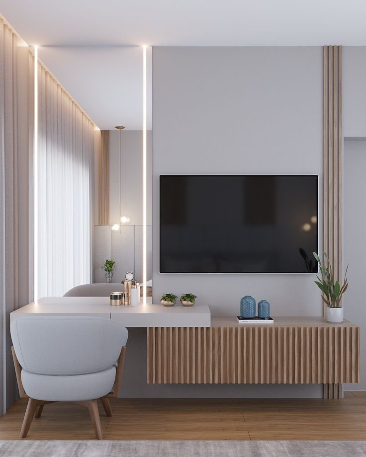
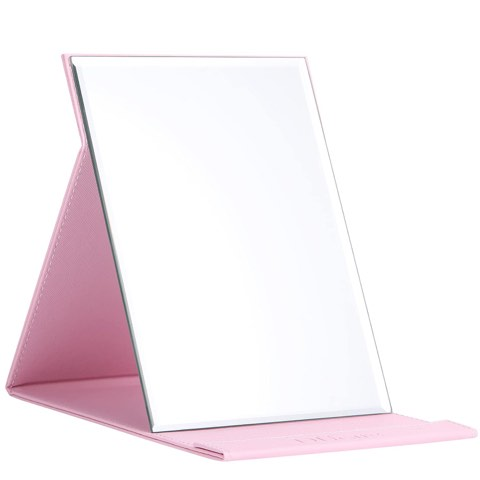
DUcare Folding Table Mirror, 6 x 8 Inch, Portable Desk and Travel Mirror
Shop on Amazon5. Floating, Modern and Airy
A floating vanity creates instant visual space, which makes it a strong pick for anyone chasing a modern look without heavy furniture underneath.
It keeps the floor visually open, feels considerably lighter than a traditional vanity, and simplifies cleaning since there's no base to work around.
It also allows for more flexible seating, since nothing bulky is anchoring the floor space beneath it. Once a floating vanity is in place, a heavy traditional one starts to feel unnecessary.
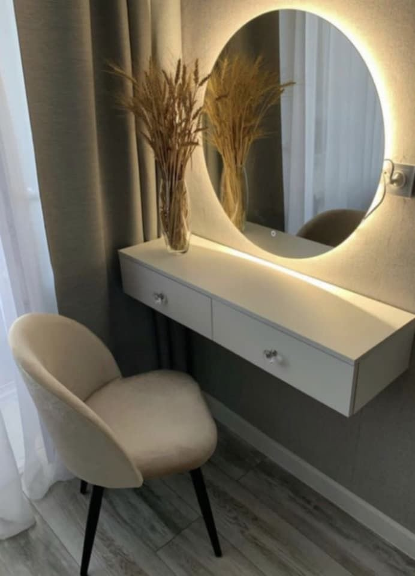
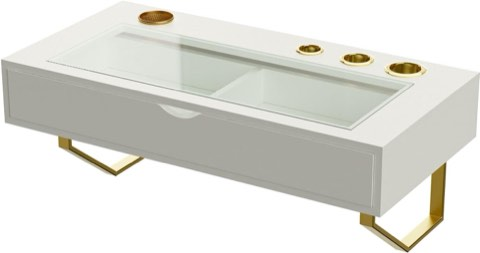
Floating Makeup Vanity Table, 31 Inch, Wall Mounted Desk for Bedroom, White
Shop on Amazon6. Luxury, Inspired by High-End Hotels
Hotel vanities always feel intentional, everything sits exactly where it should, with nothing extraneous cluttering the surface.
Clean elegance and premium finishes drive the whole look. A large frameless mirror, a soft neutral palette, and high-quality seating are the core pieces.
Subtle warm lighting finishes it off. Real luxury doesn't shout here, it whispers, and it still feels genuinely elevated.
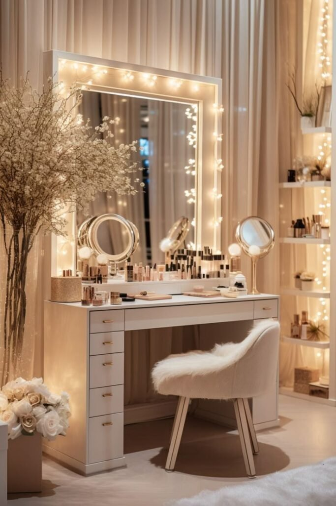
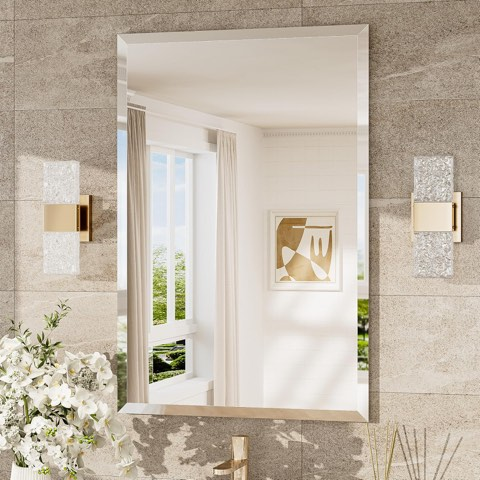
TokeShimi Frameless Bathroom Vanity Mirror, 1 Inch Beveled Edge, 24 x 36 Inch
Shop on Amazon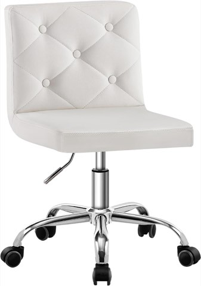
VECELO Mid-Back Armless Vanity Chair, PU Leather, Adjustable Height, 360 Degree Swivel
Shop on Amazon7. Budget-Friendly, Looks Expensive
A genuinely gorgeous vanity doesn't require a big budget. Smart choices matter far more than the price tag attached to any individual piece.
A simple desk as the base, with the mirror upgraded instead of the furniture, does most of the heavy lifting.
Affordable LED lighting and a few trays or organizers for styling finish the look. If it looks good and functions well, nobody's checking the receipt.
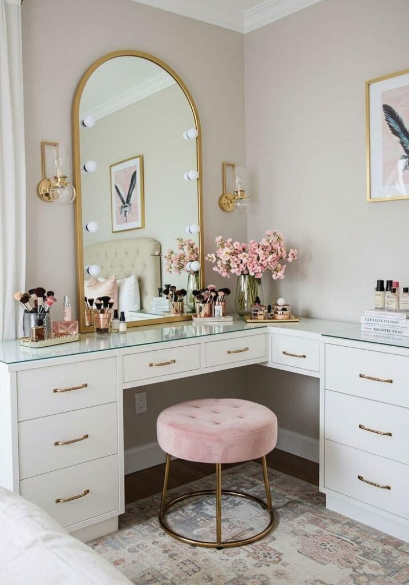
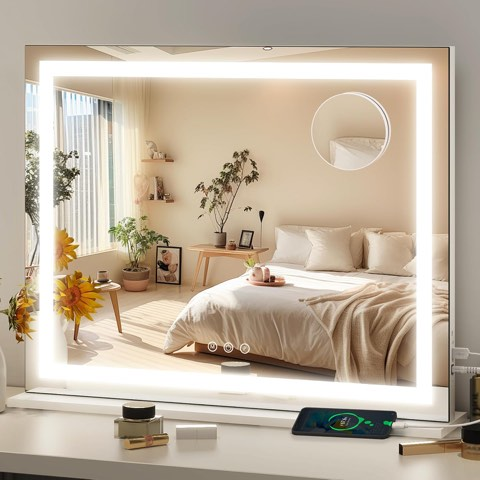
FENNIO 23 x 18 Inch Vanity Mirror with Lights, Hollywood LED Makeup Mirror, 3 Color Modes
Shop on Amazon8. A True Statement Piece
Some vanities don't blend in at all, they show up and demand real attention. This works best when the rest of the room stays calm and neutral around it.
A uniquely shaped mirror creates real visual impact, and a bold color or marble finish adds the drama.
Keeping the surrounding decor minimal stops the room from feeling overloaded, and sleek seating balances out the boldness of the vanity itself.
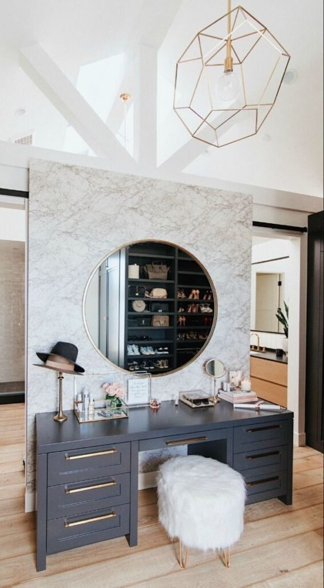
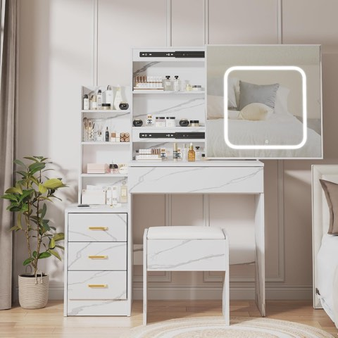
Garvee Vanity Desk with Sliding LED Mirror, 4 Drawers and Storage Shelves
Shop on Amazon9. Glam Meets Practical
This style balances looks and function in equal measure, which makes it a strong fit for anyone who wants visual appeal without a daily mess to deal with.
Open shelves display the favorites, perfumes, a nice candle, while drawers tuck away anything bulkier out of sight.
The mirror still acts as the focal point, and the lighting stays soft but genuinely effective. No need to choose between pretty and practical when a setup like this covers both.
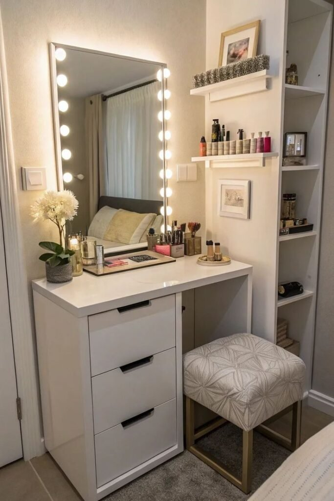
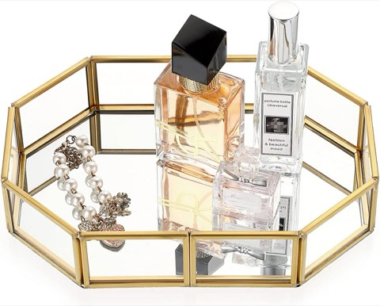
Hipiwe Gold Ornate Mirror Glass Vanity Tray, Makeup and Perfume Organizer
Shop on Amazon10. Bedroom Corner, Seamlessly Blended
Not every vanity needs to announce itself. Sometimes the goal is a setup that blends quietly into the rest of the bedroom.
Matching the vanity's finishes to the surrounding furniture, using a compact mirror, and sticking to the room's existing color palette keep it from standing out.
Subtle lighting finishes the integration, if guests don't immediately clock it as a dedicated vanity, it's working exactly as intended.
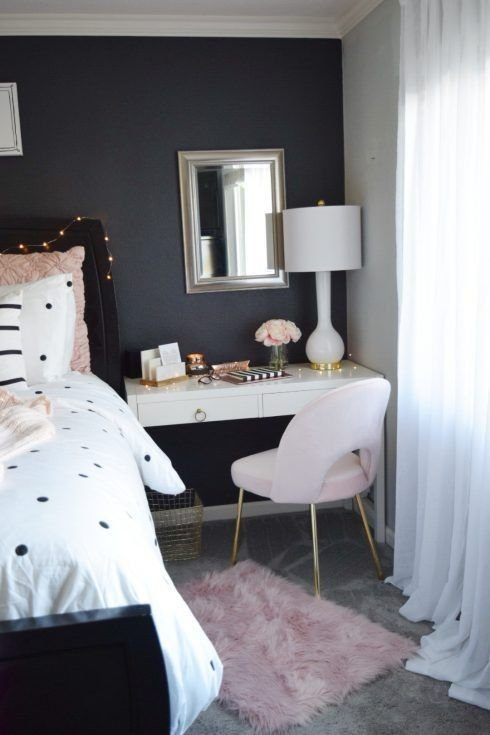
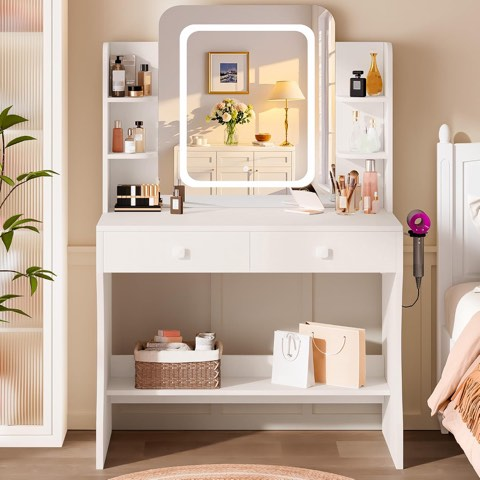
LIVELYGLOW 29.5 Inch White Small Makeup Vanity Desk with Power Outlet and Mirror
Shop on Amazon11. Boho, Warm and Relaxed
A boho vanity reads as effortless, even though the look actually takes real intention, it just hides the planning well.
Natural wood or rattan furniture, a round or irregularly shaped mirror, and soft neutral tones build the foundation.
A plant or two adds freshness and keeps the whole setup feeling more like self-care than a task to get through.
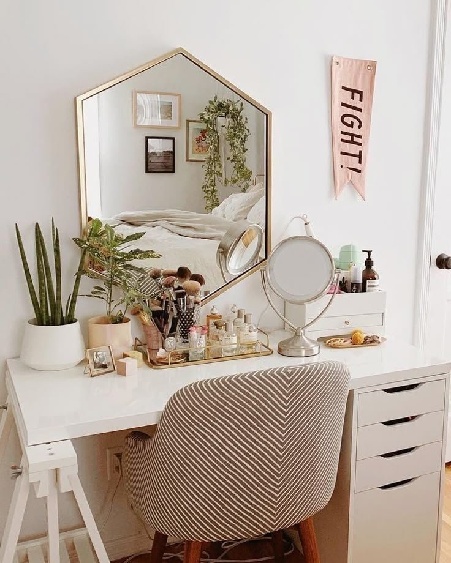
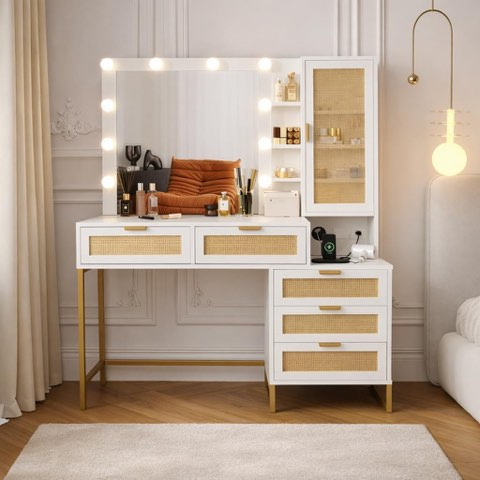
Makeup Vanity Desk with Mirror and Lights, 3 Dimmable Light Modes, 5 Drawers
Shop on Amazon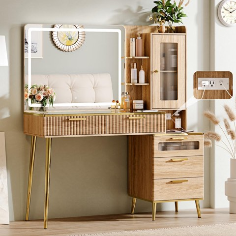
Arulvmrn 47.24 Inch Modern Vanity Desk with 29.53 Inch HD Lighted Mirror
Shop on Amazon12. Modern With Built-In Storage
For anyone who finds organization genuinely satisfying, this style hides the mess while still looking polished.
Deep drawers hold palettes, compartmentalized sections keep smaller items sorted, and soft-close drawers mean no slamming during an early morning routine.
Built-in cable management for hot tools matters more than it sounds like it would, tangled cords and overflowing drawers kill the whole vibe fast.
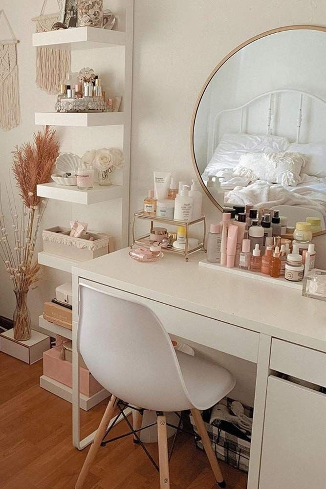
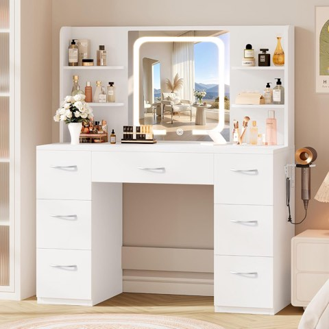
LIVELYGLOW 43 Inch Large White Makeup Vanity Desk with Charging Station
Shop on Amazon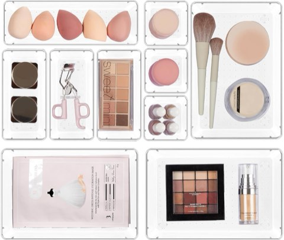
Vtopmart 10 Pack Clear Drawer Organizer Bins, 4 Sizes, Makeup Storage Trays
Shop on Amazon13. Vintage-Inspired, Full of Character
A vintage vanity brings real soul into a room in a way a brand-new piece rarely manages. An old wooden desk repurposed as a vanity can feel instantly special.
An ornate mirror frame, a distressed wood finish, classic drawer pulls, and soft warm lighting all build that lived-in charm.
Modern vanities look sleek, but a vintage one tells an actual story, which one feels more fitting depends entirely on the room it's going in.
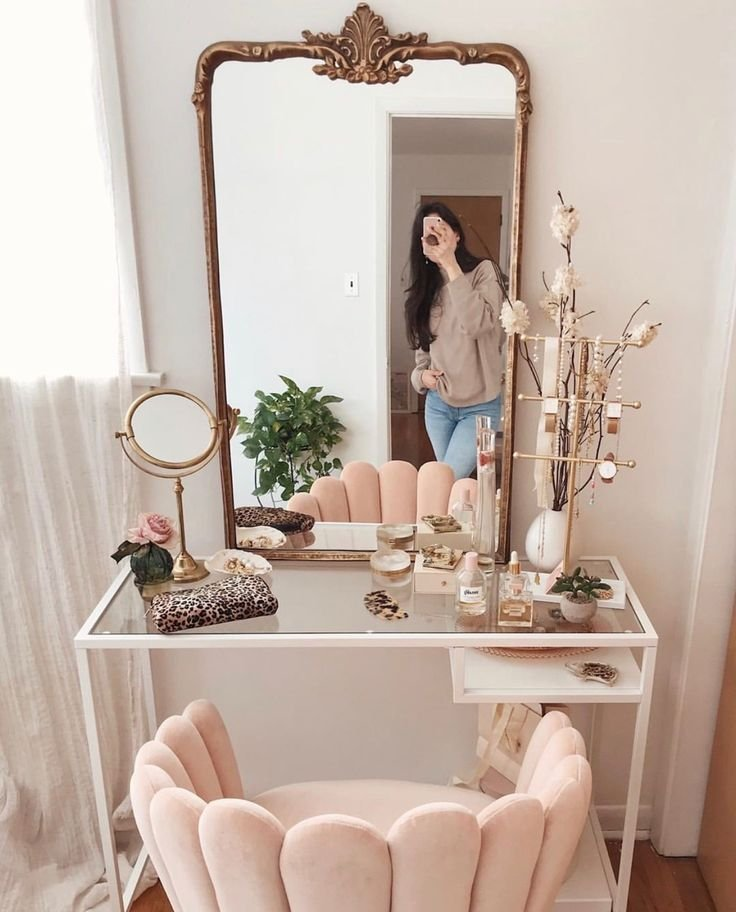
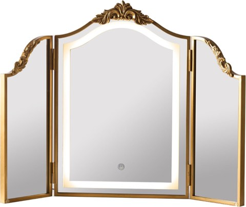
HSDDHOME Antique Gold Triple Fold Makeup Mirror with Tri-Color LED Lighting and Dimming
Shop on Amazon14. Small Space, Still Luxurious
Limited square footage doesn't mean limited style. A vanity squeezed into a bedroom corner can still feel genuinely elevated.
A wall-mounted mirror saves surface space, a narrow desk fits into a tight corner, and vertical storage keeps everything accessible without eating floor space.
Light colors visually expand the area further, walls can carry a lot of the load that floor space otherwise would.
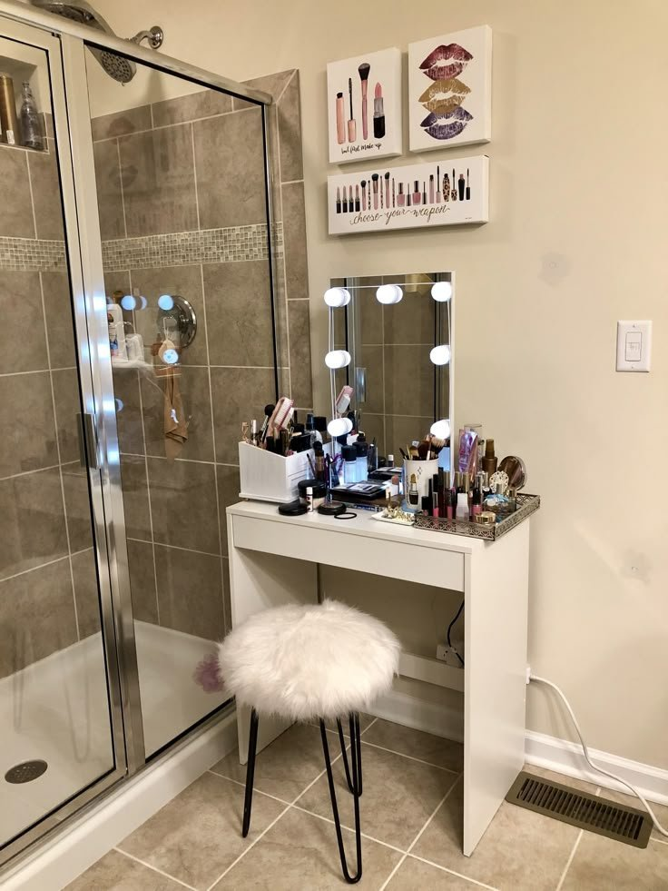
15. Minimalist and Calm
A minimalist vanity suits anyone who finds clutter more stressful than a bad eyeliner day. Everything on it earns its spot, with nothing extra competing for attention.
A slim desk or floating vanity, neutral colors like white, beige, or soft wood, and hidden storage keep visual noise to a minimum.
A simple mirror without a heavy frame finishes the look. If calm had a physical form in a bedroom, this would be it.
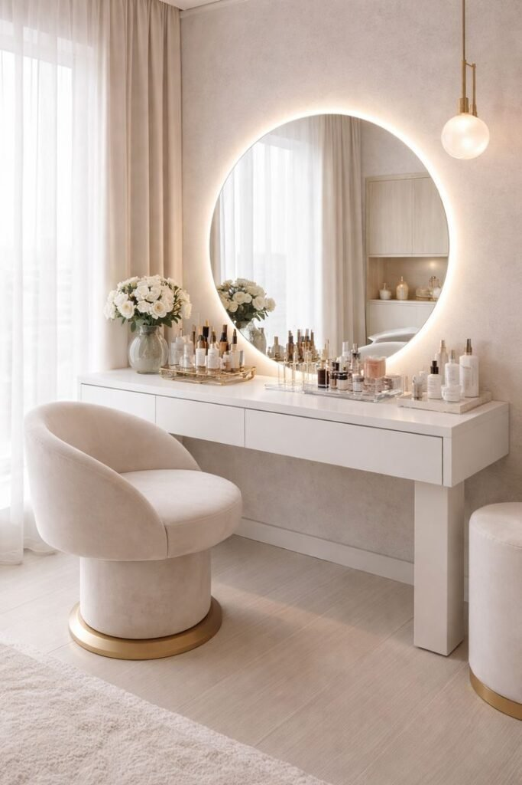
16. Hollywood Glam, Statement Lighting
For a vanity that feels like an actual movie set, this is the style that delivers. Bold mirrors, bright lighting, and luxe finishes carry the whole look.
A large mirror ringed with LED bulbs creates genuinely even lighting, and glossy or mirrored surfaces bounce that light back into the room.
Neutral tones keep it from feeling dated, and a plush stool adds the last bit of drama. Makeup consistently looks better once the lighting actually cooperates.
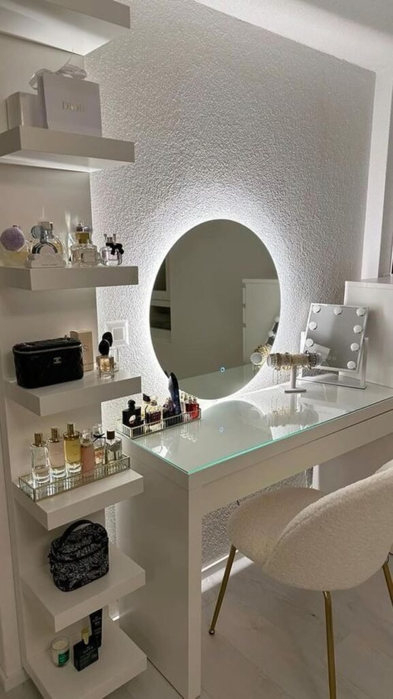
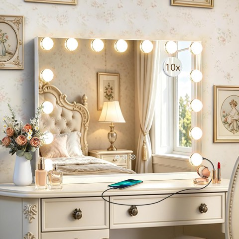
Ratsamee Hollywood Vanity Mirror with Lights, 23 x 18 Inch, 15 Dimmable Bulbs
Shop on AmazonWhat Actually Makes a Vanity Work
Lighting is the single element most likely to make or break the whole setup, even, flattering light beats a beautiful mirror with bad bulbs every time. Storage needs to pull its weight too, hiding the daily clutter without making anything harder to actually find. And the style should match the room it's going into, not an unrelated aesthetic borrowed from somewhere else entirely.
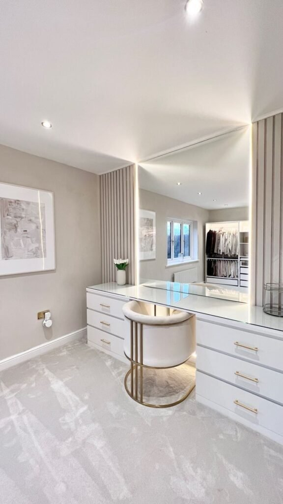
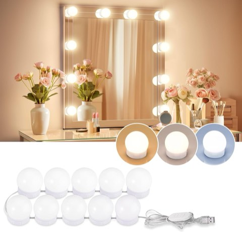
Consciot Hollywood Style LED Vanity Lights for Mirror, 10 Dimmable Bulbs
Shop on AmazonFinal Thoughts
None of these sixteen styles is the objectively correct one, the best vanity is whichever setup actually matches the space, the budget, and the routine it needs to support.
Choose what feels right, not what's trending this week. A vanity that genuinely reflects its owner's taste will always outlast whatever's popular at the moment.